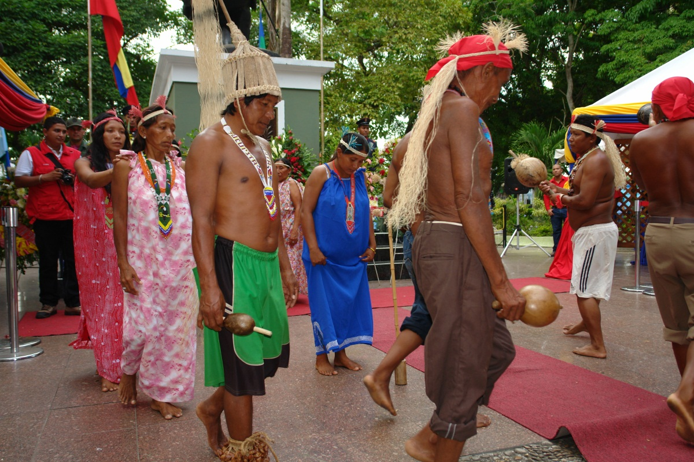
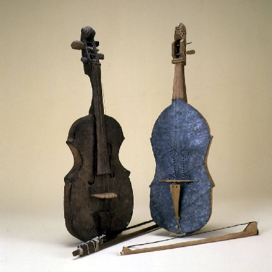

Cultura

Los waraos tienen fama de ser un pueblo festivo y alegre. El repertorio de danzas únicas junto con sus cantos es muy amplio. Los principales instrumentos musicales son de viejo como el dau-kojo, el najsemoi, el kariso y el mujúsemoi (fabricado con la tibia de un venado). Pero no solo utilizan instrumentos típicos de sus ancestros, sino que también utilizan las maracas, tambores de piel de araguato y el violín europeo.
